Plan an experiment before you buy parts
Lay out the optics on a table of the right size, check that the beam reaches every element, and see how much room is left. Change the layout as often as you like; nothing is bolted down yet.
v0.0.2 · Windows x64
An offline, native Windows app for designing quantum-optics lab setups: optical tables and custom platforms, Thorlabs-style mounting hardware and lasers, shown in 3D and as a top view.
Download v0.0.2 (Windows x64) See what it does
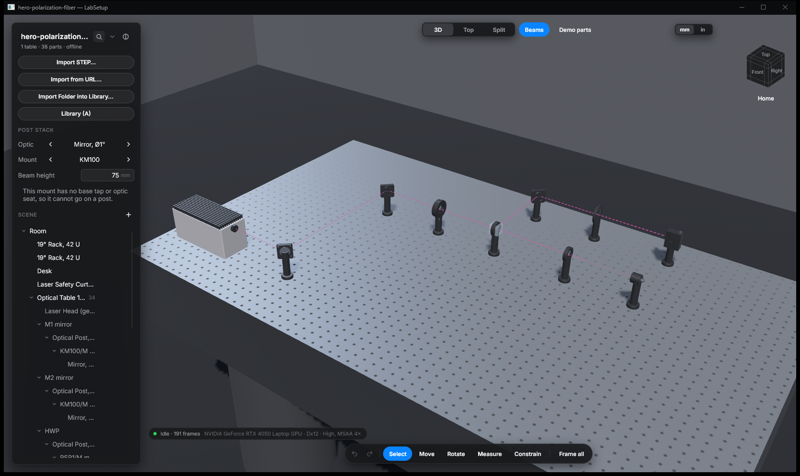
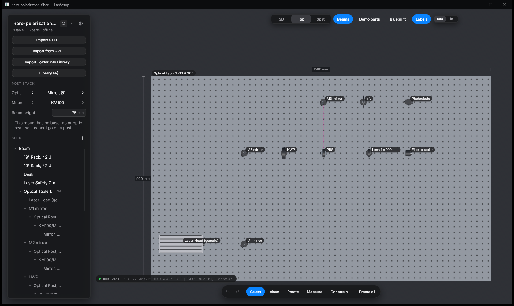
The same table as a dimensioned top view, with the hole grid, labels and the beam path. Switch between 3D, Top and Split with one click.
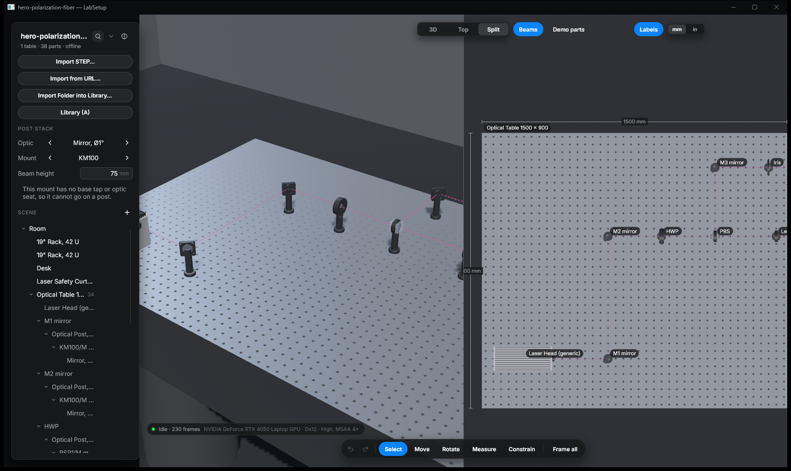
3D and top view side by side. Both views show the same scene and update together.
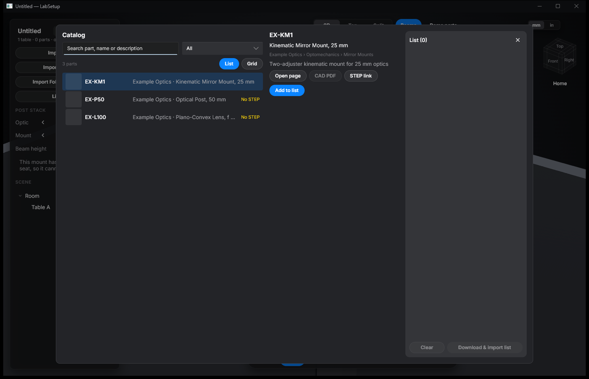
LabSetup ships without vendor catalogs. Write a small JSON file for the parts you use (by hand or with an AI assistant), drop it in %APPDATA%\LabSetup\catalogs\, and browse, search and import it in the Catalog window. The format is described in docs/CATALOG-FORMAT.md.
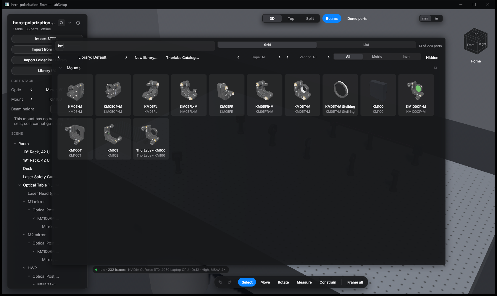
Your parts in one searchable grid, filtered by type, vendor and metric or inch. Drag a part from the library onto a table.
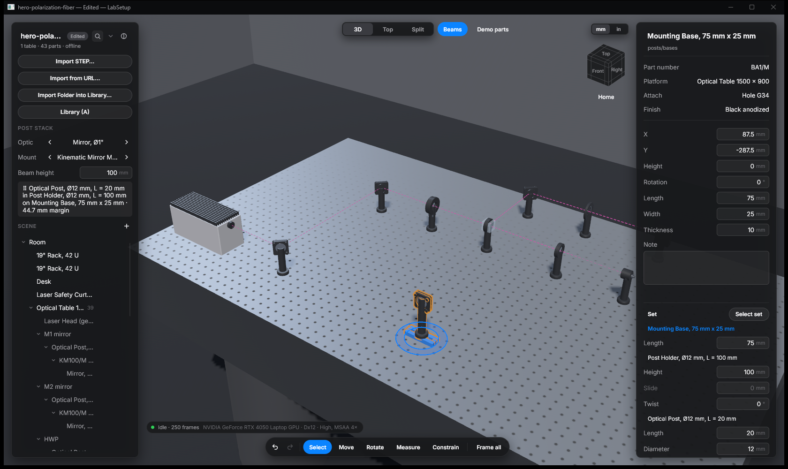
Pick an optic and a mount and type the beam height. The app picks a post, post holder and base that reach it and shows the margin left. Drag the stack onto the table; it snaps to a hole.
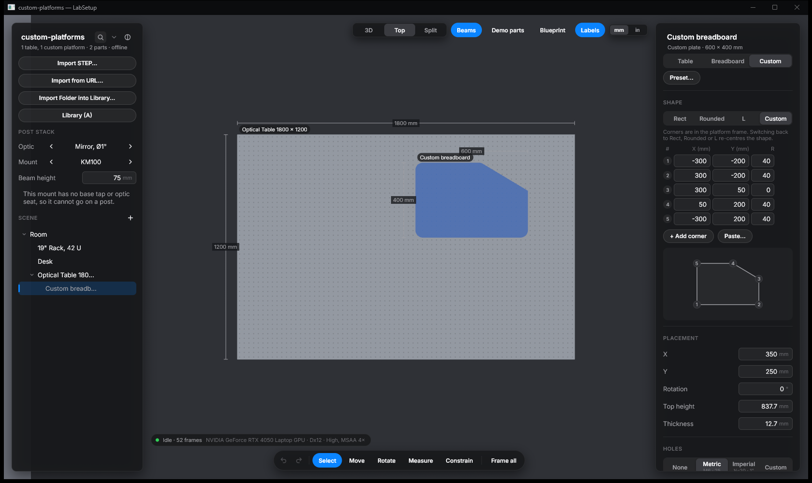
Tables, breadboards and custom plates. Edit the outline corner by corner with fillet radii, set the hole grid and stack a breadboard on a table.
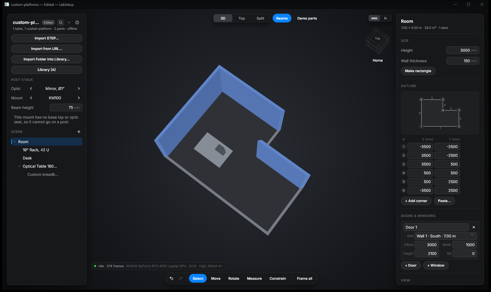
Rectangle, L-shape or any polygon. Set wall height and thickness, and add doors and windows to a wall.
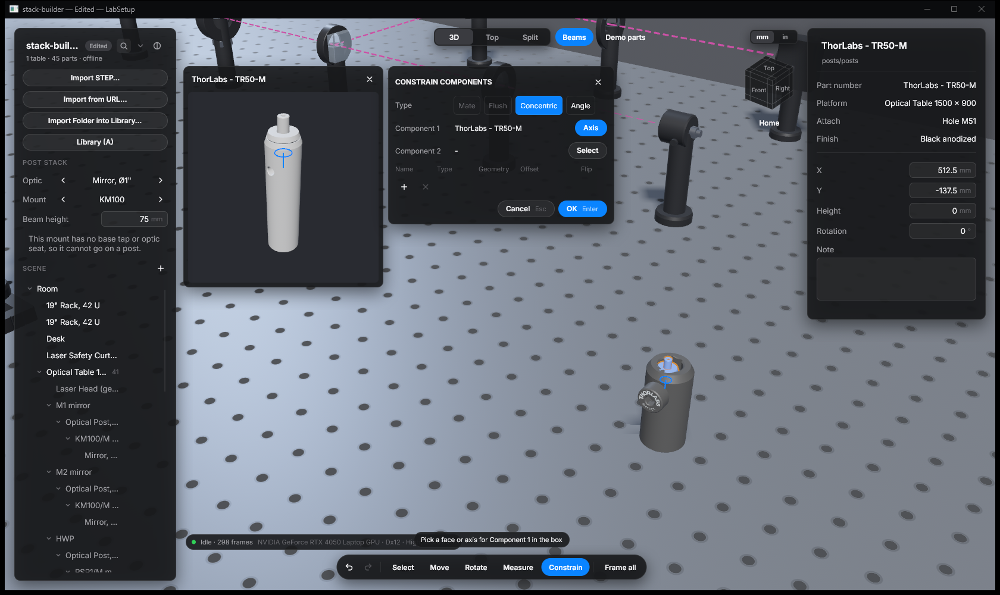
Mate, flush, concentric and angle constraints between parts. Pick a face or an axis on each part; the preview box helps you pick on small parts.
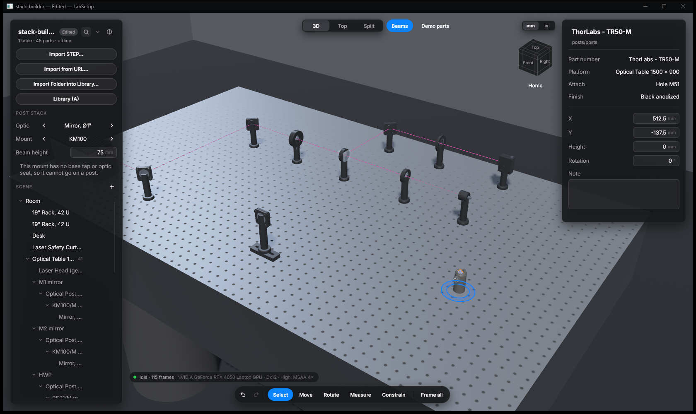
Import STEP files, a URL or a whole folder into the library. Imported parts drop onto table holes like built-in parts.
Lay out the optics on a table of the right size, check that the beam reaches every element, and see how much room is left. Change the layout as often as you like; nothing is bolted down yet.
The stack builder tells you which post and holder reach your beam height and with how much margin. The dimensioned top view shows where every part sits on the hole grid of a crowded table.
Draw the room as a rectangle, an L or any polygon, add doors and windows, and place tables and breadboards in it.
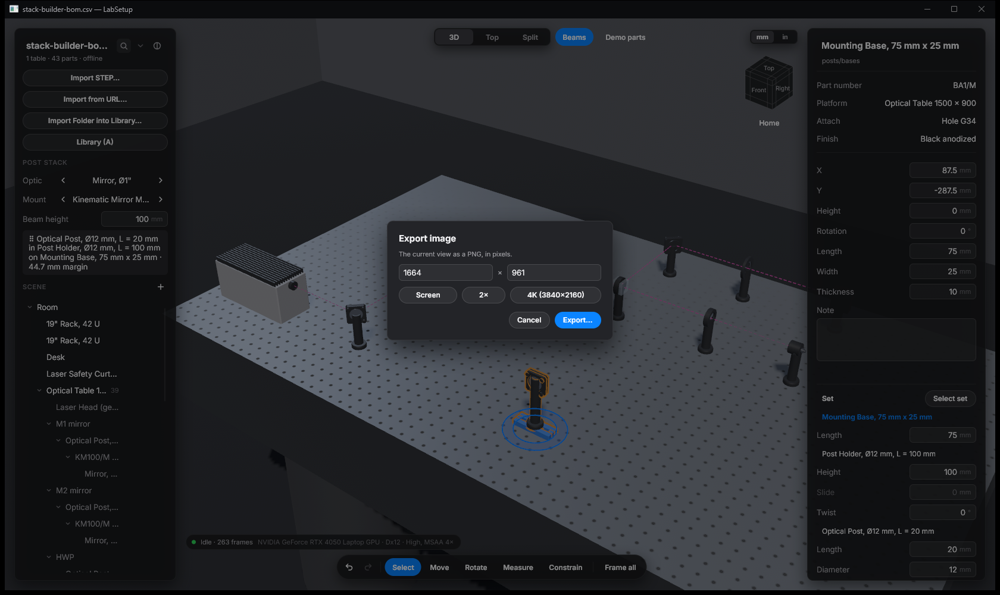
Export the bill of materials as CSV, grouped by vendor and part number with quantities (example). Export the current view as a PNG up to 4K for a proposal or a paper.
The scenes in these screenshots. Open them with Open… in the LabSetup project menu, or run labsetup.exe <file>.
labsetup.exe